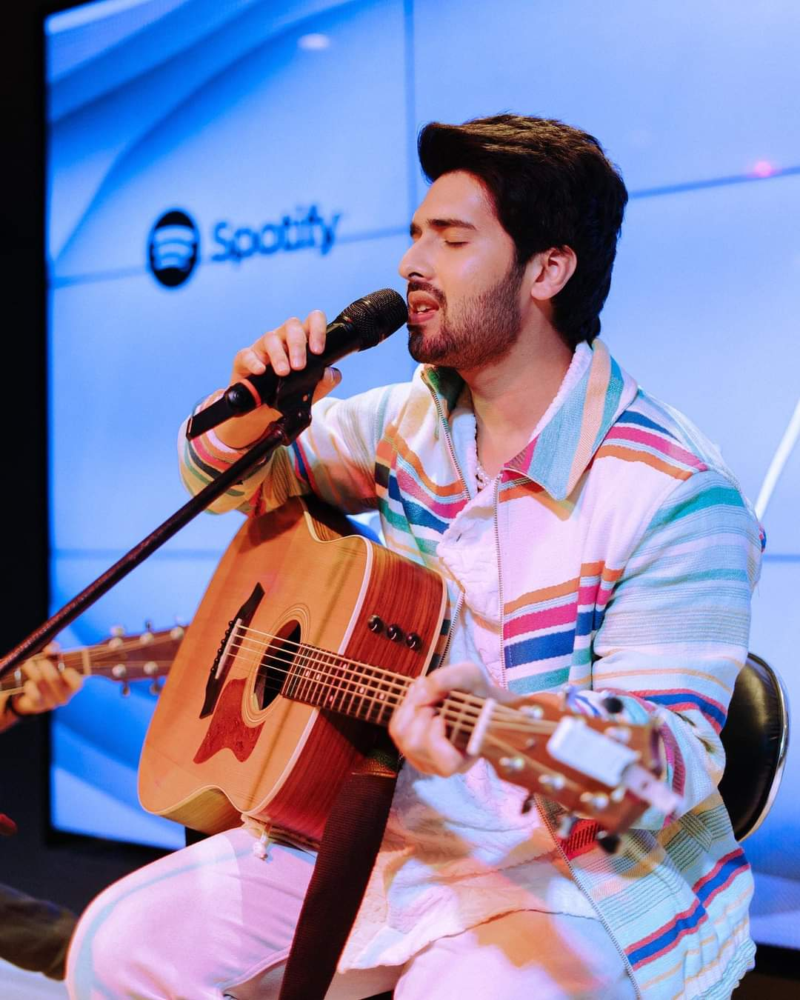

rahulsunar002@gmail.com
9869469409
SoUnD
MUSICO
Explore The Music Along With Great Artists


Featured Artists

Arijit Singh
Arijit Singh is an Indian singer, musician, and music composer
who not only lend his voice to the stars of Bollywood but also gave rich melodies to the Indian Cinema.
He is one of the artists whose name and voice are found in almost all movies, with his every song topping the charts.

Armaan Malik
Armaan Malik is an Indian playback singer and actor
who is best known for being the youngest singer to win two debut awards at Global Indian Music Awards (GiMA)
and best playback singer award at Big Star Entertainment Awards in 2015.
Armaan Malik has become the first Indian singer-songwriter to be featured on
the prestigious Spotify Times Square Billboard in New York City for his latest English debut 'Control'.
One of the select few Indian music artists to make such a significant impact, Malik has reached this milestone at just the age of 24.

Sujan Chapagain
The music industry of Nepal is getting a fresh voice on a time-to-time basis. We are getting a lot of a fresh voice in your nation to add better ingredients in the musical industry. This is the reason we are getting 100 and 1 percent singers in our Nepali Rhythm industry. Here we are with one of the rising music stars, not other than Sujan Chapagain Biography towards all Nepali music lovers and fans.
Sonu Nigam
Sonu Nigam is a leading Indian singer who rose to acclaim through playback singing in Bollywood
and other regional films. Gifted with an extraordinarily melodious voice and amazingly versatile talent,
Sonu Nigam may well be called one of the best singers of recent times.
Let us know about your Review
How is this website?